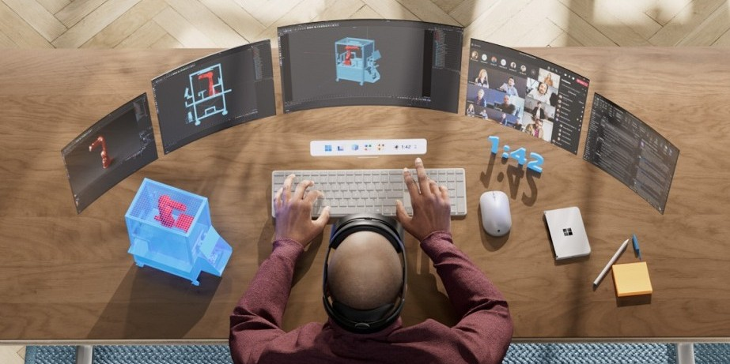
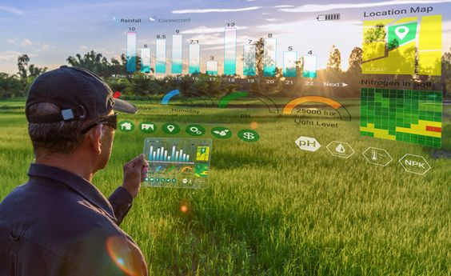
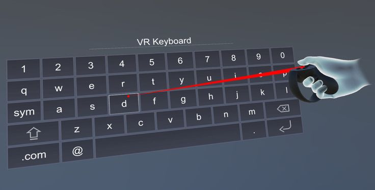
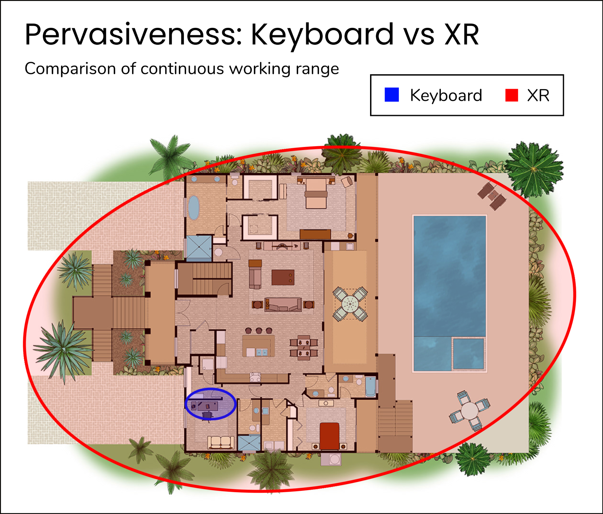
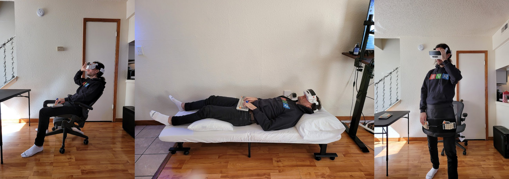
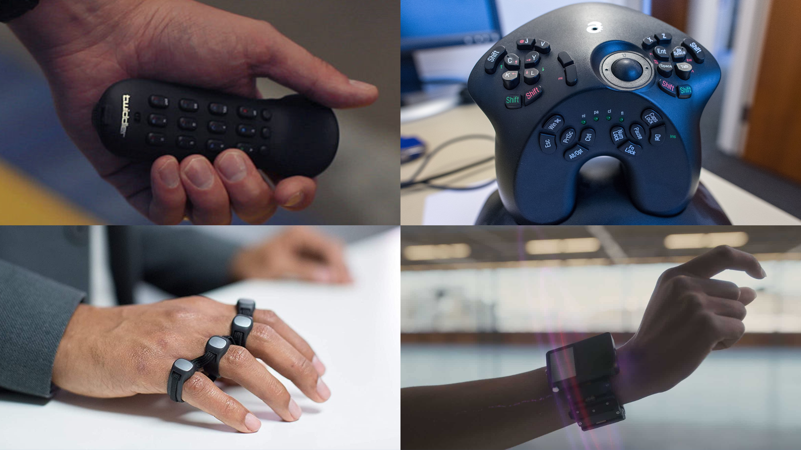

Does XR Need a New Keyboard?§
The year is 2027. You just got a new XR headset to replace your computer. Unlimited screen real estate in a distraction free realm. Or so you thought.

Empowered by this expansive new computing paradigm, you stand up, effortlessly able to continue your efforts.
Problem
Your keyboard is stuck on the desk.
How restraining.
Problem: The keyboard restricts XR§
XR means the freedom to take immersive computing anywhere: pace the room, roam out into nature, lie in bed or the comfiest of chairs; your cinematic information interface comes effortlessly with you.

XR "unlocks the map" for larger computer interfaces-- but here's the catch, as soon as you need a keyboard, you're tied to the desk (alternatively you may suffer the following torment).

Next time you see a futuristic render of someone orchestrating a elaborately complex XR interface with their mere hands, ask yourself this: when you use a computer, could you last a day, let alone an hour, working like this? or would you want a keyboard?
Though there are many cases where a touchscreen interface will do, for professional or otherwise performant computer use cases; such as writing documents, emails, or using specialist applications, keyboard presence is completely ubiquitous. As XR grows to serve these use cases, it shall be strange that a floating 8k monitor comes everywhere with you, when a keyboard, a seemingly simpler device, can't.

Solution: XR needs a new keyboard§
XR is calling out for a new keyboard --or keyboard like device-- that matches the working range of the headset it will accompany. This problem is obvious for anyone that actually tries to use a XR headset as a computer.
Take SimulaVR, a company building the first VR linux workstation. They have ran into this problem in practice and implemented the first a improvised solution, the 'Keyboard Apron'.

The Apron is an significant upgrade on the stationary, desk mounted keyboard, but not without flaws. The arms are locked in a single (non-optimal) position, so cannot be combined with standard VR-controllers or gestures, not to mention, the setup is large and clunky. It's a good hacky compromise, but not yet a truly native XR keyboard.
Elsewhere, the internet reveals a graveyard of past attempts at wearable keyboard tech, none of which quite made the cut as a mainstream keyboard replacement. There was the 1992-2015 twiddler, a chorded one-handed keyboard (still available today), the 2005 AlphaGrip, a gamecontroller-with-lots-of-extra-buttons shaped keyboard, the 2015-present Tap Strap, a web of rings that registers taps on a surface, and the 2019 CTRL-Labs writstband (acquired by Meta/Facebook), which aimed to reconstruct gestures from electrical sensors on the wrist.

Having gone to great lengths to acquire and test them all, one shared weakness is certainly uncomfortable ergonomics and bad (or nonexistent) tactile feedback. Another common weakness is the keymaps: all are non-standard, so have a steep learning curve (weeks if not months of painstaking training), and all result in a considerably lower WPM than a standard keyboard; a bitter pill for all, and dealbreaker for many if not most.
This gives some direction to what a viable wearable keyboard might look like: comfortable ergonomics & tactile feedback, with a low learning curve (close to standard layout) & fast WPM.
Conclusion§
We conclude that, (1) the standard keyboard is not suitable for XR (moving, getting comfy, going outside) due to its lack of mobility, (2) it is a convenient fiction that computers will be entirely, or even largely, operable without keyboards in the near future, (3) hence, XR computers are hamstrung by the lack of a viable keyboard, and so finally, (4) yes, XR needs a new keyboard-- wearable computers need wearable input.
What exact form this will take is not yet clear, say for example, how much will such a device resemble the current keyboard? What I do know is that I want an XR computer and so I want this. If no one else is going to build this, I might just do it myself.